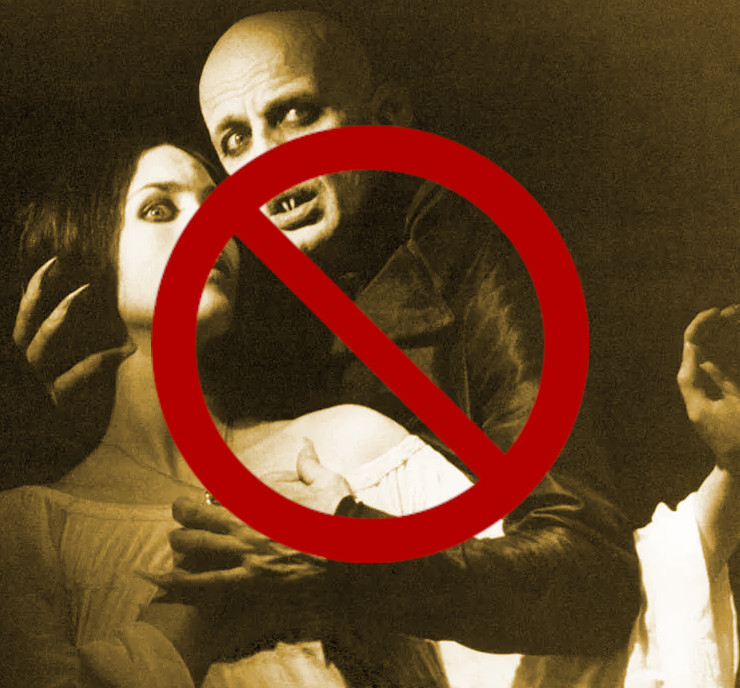

Inaugural Essay

Correspondence
WUTHERING.UK
P.O. Box 1302
Grand Marais, MN, 55604
USA
 January, 2024
January, 2024
But first something about the Dark Muse
 The Great Inland Sea: conductive of the Dark Muse
The Great Inland Sea: conductive of the Dark Muse
To begin
Light snow drifts gently down from low clouds draped over a misty boreal forest. Deer in their grey winter coats process through the fir and spruce. Ravens and crows dolefully croak and caw back and forth. And I burn a daytime candle. Such an ambience to convey my thoughts, my impressions and feelings about my Dark Muse.1 muse: Originally any of the nine sister goddesses in Greek mythology presiding over music, literature, and arts; or a state of deep thought or abstraction, e.g., to enter a muse over a poem; or a source of inspiration, e.g., Jane Austen is my muse.
Do you have a strange fascination for things on the gloomy side? You often find dreamy what others find dreary … like when an overcast day brings on a strangely sanguine melancholy … or a stormy night is magnificent in a frightening and thrilling sort of way. Twilight is a welcome reprieve from the hectic day, freeing your senses, deepening your thoughts. Unnatural is getting out of heat into air conditioning and drinking iced beverages; however, it is so nice to come inside out of the cold and sit by a fire and drink hot tea… Perhaps you’ve paused to gaze transfixed upon an old, abandoned cemetery, or a lonely, nondescript landscape. A decaying, overgrown other-century dwelling makes you envious of the bats living there. Though panic and nausea well up when those around you are attempting to impose happy-clappy, sunny-cheery; generally, what is uplifting to them is piteously trite out to ruefully wretched to you. Your heroes learned and grew facing grim and harsh—and if they succumbed to the thrashing, amen, RIP…2 …e.g., Lady Honoria Dedlock’s death at the graveyard in Dickens’ Bleak House. You prefer candlelight over artificial light, old architecture over new, the genial disorder of wild nature over the forced order of gardens. If in a city, you gravitate to the “old town.” What is spectacular to them is suspect and eventually disappointing to you … whereas things subtle, veiled, shadowy tenuous, understated are intriguing. Stirrings, please, not shaking or slamming… And wouldn’t it be grand if every month (or week!) we celebrated Halloween? If yes to any of this, you might understand what I’m trying to say here.
We are loathe to explain our dark penchant to those who don’t, can’t, won’t get it. As it were, the Dark Muse must flee any sort of logical or rational packaging. Dark as I mean it was best presented by certain principle poets of the early nineteenth-century Romantic Era3 Quick preliminary, much more later: The term Romanticism followed a twisted path beginning with the Latin romant, or, “in the Roman manner”, thus, not at all our current use of the word as a synonym of love. In general bundling what I’m trying to get at as Romanticism is fraught to say the least. Lots more as we go… , an emergent property, a very special private corner of this ultimately maligned and misunderstood time. And best is the Dark Muse in poetry, for if we put something to lyrical poetry we have captured more and drove deeper than had we described with prose. I can only say my Dark Muse often comes on as a feeling behind feeling, subtle, profound, yet fleeting, not hanging around for pedantics’ descriptions.4 One very important principal, the German poet Novalis (penname for Baron Friedrich von Hardenberg), often used his unique fragment style to describe his Dark Muse. And so he abandoned even lyrical poetry to get even more bursty, more spontaneous in order to capture the subtleties of his impressions. Lot more about Novalis, the presumed founder of German Romanticism below. Dark stirrings arrive mostly unannounced, a veritable surprise. And so this essay will rely heavily on the poetry of the preeminent Romantic Era champions of Dark Muse.5 It is almost as if principal poetess Emily Dickinson used words to mercilessly expose just how tenuous words really are. We’ll see her wicked flights into thoughts behind thoughts.
 Transfixed by an abandoned graveyard: octonimoes@DeviantArt
Transfixed by an abandoned graveyard: octonimoes@DeviantArt
Adding an extra wagon to the goth train
Of course I have an affinity with and feel a kinship to the modern
goth subculture.6
…described here as well as anywhere.

And yet it is one of the elephants I must shift
from the centre of the room. In very short, I believe modern goths
surely sense Dark7
Allow me German noun capitalisation for poetic emphasis.
, but for whatever reasons only want to
express it, explore it very narrowly through goth music and
fashion. My Dark Muse would hopefully include, be akin to what is
today called goth and gothic, but I must go deeper and more
elemental. I hope it’s obvious by now that I want to speak to your
“inner goth.”
There is a natural darkness nature provides, a basis upon which we may create symbolisms, artefacts, icons, trappings to emulate, decorate, magnify, socialise, humanise, bring indoors natural Dark. Yes to aesthetics as far as they may resonate, do honour to Dark. But too often our human take on Dark arrives overstated, overwrought—all the way out to grimy, ignoble, silly, scummy. We must surely imbibe then express what we see, experience, feel, but I must implore it be done carefully, when not respectfully. And so I must reject so many of the overdone gothic horror fright memes, e.g., vampires, witches, demons; mean, nasty, menacing this, campy, threatening, evil that. Right up front: My Dark is not meant to shock or frighten, rather, invite, deepen, and enrich. My Dark Muse contains nothing cruel nor evil nor sinister nor satanic8 As philosopher and psychologist John Vervaeke said in describing the modern crisis of anxiety and dysphoria, “Horror is the aesthetic of when you feel like you’re losing your grip on reality.” Nothing to gain with horror memes. Not going there… . Not the Star Wars “dark side,” not dark barbarism à la Heart of Darkness, and not the psychic dark described by Freud or Jung. Or course they’re all interesting, and yes, trappings can be fun, but we must not lose sight of the source, however obscure and difficult. I’m after something more subtle, discriminating, and inward-personal. My Dark is about the sublime,9 Indeed, sublimity. More on Edmund Burke’s (as well as Bertrand Russell’s) false, “they don’t get it at all” tedium on sublimity later. In short, sublime is what we may find beyond mere beauty, touching what Dostoevsky is saying here: There are seconds, they only come five or six at a time, and you suddenly feel the presence of eternal harmony (POEH) fully achieved. It is nothing earthly; not that it is heavenly, but man cannot endure it in his earthly state. One must change physically or die. The feeling is clear and indisputable. As if you suddenly sense the whole of nature and suddenly say: yes, this is true. This is not tenderheartedness, but simply joy. … Perhaps awe instead of joy? Again, much more fleshing out as we go along… sublimity being the next step beyond beauty into Dostoevsky’s POEH. And so I hearken back to a golden era when Dark was the cultural currency, to be sure, the early nineteenth century, a time when key poets (e.g. Poe, the Brontës) showed us how triste and Stygian can be so very subtle and sublime. I’m after something I will not outgrow, rather, continue as my raison d’être sustaining me to my grave. And so I say there must be no “aging out of the scene” as I fear often happens with modern goth. Rather, the Dark Muse should be a deepening and widening and transcendence for one’s entire life.
 Klaus Kinski as NosferatuAnother ox gored is my rejection of modern dumbed-down American street English, which has permeated modern society—virtually worldwide. Basically, I mean to sound more erudite, sophisticated, intellectual with my take on past-century British-feeling English. Why? Simply because the English of the early-nineteenth century was like a thoroughbred race horse, sleek and powerful, capable of amazingly deep and expressive things; whilst modern American street English is beggared, destitute, impoverished and requires a buy-in to a particularly base, ignorant, crude and aggressive hipster Zeitgeist. Which I repudiate, not going there. Although I’m sure I will occasionally slip up. Back in the day, people were more genteel, thoughtful, fine-spoken. Indeed, back when having character and honour was a thing. As a result, their poetry could express the depths and heights of human thought and sensitivities so much better.10 …while so much of our modern poetry is screed doggerel. For example, Allen Ginsberg acclaimed Howl is really social-political pamphleteering in verse, not true poetry as it has been known for centuries. And things go downhill fast—into the most ridiculous absurdist nihilist nonsense. In past centuries they understood the human need for holiness, grandeur, the epic and eternal. Compare this with the crypto-rebel posers we see everywhere today who believe being coarse, crass, base, irreverent—and arrogant, in-your-face about it—is somehow progress… But on the other hand, it might just be that I’ve finally succumbed to the influence of all those schoolmarms back in my distant childhood who made us read, e.g., Shakespeare and Hawthorn, holding up “wordy,” other-century English as superior. Mrs Mugwortlawny was right, you know. And yes, I’ll occasionally drop foreign as well as Latin words and phrases, my foreign language being German. You have been warned…
Dark like me?
For me life seems empty, insipid, weak, every moment rudderless and
misspent without a strong current of the Dark Muse. It’s as if life
cannot be properly understood without the dark perspective. But is
this nature or nurture? Am I innately so, or is this something
acculturated?11
…perhaps by one of my Victorian Era-heavy schoolmarms?
A quick litmus test. I present here a short,
simple poem from my main darkness benefactress, the poetess who stands
at the centre of everything I mean to say about dark, namely, Emily
Jane Brontë12
Oddly enough, I’ve never read her Wuthering Heights and do
not intend to. (More about why later.) However, her poetry I read
continually, discovering new things, gleaning deeper insights each
time. See here for a quick biography.
Fall, leaves, fall; die, flowers, away;
Lengthen night and shorten day;
Every leaf speaks bliss to me
Fluttering from the autumn tree.
I shall smile when wreaths of snow
Blossom where the rose should grow;
I shall sing when night’s decay
Ushers in a drearier day.
Here EB is direct, blunt even. But now we know. Either she speaks to something in you, or you are part of the majority who finds it—weird, abnormal, morbid, overwrought, puerile, even sick or evil. To be sure, my dark penchant gets mostly deer-in-headlights responses, if not outright hostility. The openly hostile see my dark druthers as morose, morbid, as wallowing in self-pity, dwelling on the negative, in need of a quick DSM–5 look-up. I beg to differ…
Here is something a bit lighter but the same basic idea from
Christina Rossetti 13
See here for a bio. She is considered by many Britain’s
most prolific poet.

Fade tender lily,
Fade O crimson rose,
Fade every flower
Sweetest flower that blows.
Go chilly Autumn,
Come O Winter cold;
Let the green things die away
Into common mould.
Birth follows hard on death,
Life on withering:
Hasten, we shall come the sooner
Back to pleasant Spring.
Rossetti exposits a dark fatalism, ending with hope bound in humble expectancy. I like to think these two English poetesses are expressing an informed, matured melancholy that bespeaks a deeper understanding of life.
And another poem,14 Yes, poems, as the Dark Muse seems to find its best, most concentrated expression through poetry. Much more on why mainly poetry delivers the ineffable of darkness later. here Longfellow’s Snow-flakes from a collection published in 1863
Out of the bosom of the Air,
Out of the cloud-folds of her garments shaken,
Over the woodlands brown and bare,
Over the harvest-fields forsaken,
Silent, and soft, and slow
Descends the snow.
Even as our cloudy fancies take
Suddenly shape in some divine expression,
Even as the troubled heart doth make
In the white countenance confession,
The troubled sky reveals
The grief it feels.
This is the poem of the air,
Slowly in silent syllables recorded;
This is the secret of despair,
Long in its cloudy bosom hoarded,
Now whispered and revealed
To wood and field.
Here I see Longfellow15 Go here for a quick biography. HWL was not typically Dark, rather, a popular “uplifting” poet with a big audience. That’s what makes this selection so unique for me. looking to the natural world and poetising, to be sure, darkly. The idea of poetising, the poetisation of nature and life was central to the Romantic Movement. It parallels the long-standing belief that we humans explain ourselves through, embed our lives in narratives. And to be sure, in olden times nature was the stage. And so, agents of mental affliction and depression—despair, grief, misery—are transformed into more equanimous states of sadness and melancholy, hopefully reaching a higher emotional maturity. In some paradoxical way, nature and darkness eventually become healers … as if the initial agony and sorrow are a ravaging cancer or virus that eventually fades into remission, but can never entirely be eliminated whilst on Earth.
This poetising of nature dark and mystical was the modus operandi of my select nineteenth-century poets16 Dark as a teacher. The German poet Novalis, whom we’ll meet later, described in exceptionally moving poetic terms the night as a soother and healer. . Rather than avoid, they encountered, embraced the dark, something we today in our brightly-lit, cordoned-off world might consider counter-intuitive, if not wrong-headed. I contend we have lost this subtle art of moving hardship, tragedy, emotional crises into a stasis remission melancholy. Too often we are failures at finding a modus vivendi17 modus vivendi: An arrangement or agreement allowing conflicting parties to coexist peacefully, either indefinitely or until a final settlement is reached, or (literally) a way of living. with the trials and tribulations of life as our ancestors once did.
Surely the human suffers poorly. Again, all we may ever do is usher the initially searing, inescapable pain to a dull ache in the backdrop of time. Though again I would say this was better conducted in the past than today. They did not attempt to contain, disguise, systematise, or process greif, rather, greif was faced directly, pain was shared, empathy a way of life. And so emotional space was allotted, support was communal, organic, and natural. Strikingly different from today was their acceptance of doom18 Doom as unforeseen consequences of previous actions, which in turn, entropically snowball into indebtedness, tragedy, and ruin; typically multi-generational, a punishment that never seems to fit the original crime—if it was a crime at all. The German word for doom is Untergang, which also means downfall. and fate, two concepts antithetical to our dynamic, positivist, self-determining, fix-everything-quickly, cover-up-the-sticky-bits modern attitudes.
Consider Queen Victoria19
Queen Victoria in mourning black ca. 1862.

who wore mourning black from the time
of her husband Prince Albert’s death in 1861 till the end of her life
in 1901. Likewise, Amélie of Leuchtenberg who upon losing her husband
Pedro I of Brazil in 1834, wore mourning black until her death
in 1873. In those days death was properly, officially mourned. No one
dared chivvy mourners along with their grief and sadness. Contrast
this with today’s all-too-prevalent disassociation, the confused
emotional shutdown, the disorganised quasi-denial and suppression we
moderns too often show towards death20
Is there anything worse than the so-called five stages of
grief or the Kübler-Ross model? Grief as an emotional malfunction
to be systematically reduced, fixed, corrected? Alas.
. For the early nineteenth
century, poetising life’s train of tragedy was depression
deconstruction as a life skill. The slings and arrows of human
existence found conjunction with nature, darkness, and faith
through poetry, thereby highlighting, elevating our uniquely human
experience on Earth, casting a gossamer of sublimity over our natural
existence like no other generation before or since. Theirs was the
deepest exploration of our true humanness that I know, and, thus,
something I must pursue.
But why Dark?
But still, why Dark? Dark speaks to me, but, again, how, why? Lack of a clear and simple answer forces me into a regrettably wordier one? Dark remains mysterious—no matter how I try to imbibe or express it. Dark is something instinctual, cathartic, evocative, centring for me. Dark is more than the lack of light. Dark can lead the imagination to riot. The moss, lichens, and mushrooms in the secretive shadows of the forest incite so much more than the spectacular sunny vista across the forest valley. The fresh-cut rose elicits one response, but the faded rose another—deeper, but for me never dysphoric. Here is something from my novel Emily of Wolkeld21 Lots more about my novel as we go.
The new cut rose: Initially beautiful, thereafter dried and desiccated, lost forever its initial beauty and fragrance. Once affording a glimpse of perfection, only reminiscent thereafter. Beauty always some fleeting illusion or madness? Moreover its eclipse, joining, leading the shadows of our relentless doom, our march to the grave. And though I live in this momentary brilliance, I still search my night shore; for until now I have known only of beauty’s haunting rumour, of love’s promise, those slightest quickenings of things necessarily rare and formerly peripheral. Yes, in this moment I may have some of love’s bliss, but I know I will cherish with a larger, more mature heart the memory thereof, an echo sent down life’s long, clouded memory hall as the true and lasting blessing.
Yes, there might have been a dinner invite for me back in the day…
Let’s see another example of get-it-or-don’t, this time a poem from
Emily Elizabeth Dickinson22
See here for a quick biography.

of Amherst, Massachusetts,
her There’s a certain slant of light23
In the third line, Heft means weight, heaviness; importance,
influence; or (archaic) the greater part or bulk of something.
There’s a certain Slant of light,
Winter Afternoons —
That oppresses, like the Heft
Of Cathedral Tunes —
Heavenly Hurt, it gives us —
We can find no scar,
But internal difference —
Where the Meanings, are —
None may teach it – Any —
’Tis the seal Despair —
An imperial affliction
Sent us of the Air —
When it comes, the Landscape listens —
Shadows – hold their breath —
When it goes, ’tis like the Distance
On the look of Death —
Indeed. That last line includes Death capitalised24 Again, Dickinson often employed the capitalising of nouns for poetic emphasis. . Again, I must emphasise these nineteenth-century artists understood death much differently than we do today. Unfortunately, this capitalised, past-century view of Death has become opaque, lost. I hope to rediscover it. I’ll start by positing their understanding of Death was integral to their understanding of nature…
Nature and Death in the nineteenth century
The main points being:
- True nature is birth, growth, deterioration, and death, full stop, nothing else…
- …ergo, nature is not a place, inside or out, rather, a state of being…
- …ergo, no degrees of nature, rather, nature constant ubiquitous…
- …ergo, death is an integral part of true nature.
- The increasingly extra-natural, quasi-immortal modern human
- My poets’ direct exposure to nature dominant versus our aloofness, estrangement from nature as planet-spatial.
I hold that our modern, twenty-first-century understanding of nature
is very different than that of early-nineteenth-century poets such as
the Haworth and Amherst Emilies25
My shorthand for Emily Brontë and Emily Dickinson is based on
their towns of origin — Haworth, West Yorkshire, for the former and
Amherst, Massachusetts, for the latter.
and their contemporaries. Just
considering our indoor living environments today, a typical modern
building is more like a sealed space station plopped down on a
hostile alien planet compared to the simpler, more primitive
structures of the not-so-distant past. Quite literally, the Brontës’
Haworth parsonage, built in 1778 out of local stone and wood and clay,
had more in common with human shelters from one, two thousand years
previous than with our modern suburban homes only some two hundred
years later26
Deep indoors deep in the forest…

. Hence,
in just the past two to three hundred years a very steep, vertical gradient or differential has grown between indoors and outdoors.
This, in turn, has brought us to see nature more as a place separate and outside, cut off, away from our artificial, high-tech, controlled and regulated modern indoor spaces27 Is it not ironic how nearly all lifeforms that attempt to share our human environments uninvited are considered invasive, noxious vermin, pests to which we have developed almost hysterical revulsion? … which, in turn, has lead us to rate outdoors nature on continua of relative wildness and remoteness from our sealed-off, self-contained, humans-only environments.
 Homespun and one of its sources. Original art from Steve-Lease (DeviantArt.com)
Homespun and one of its sources. Original art from Steve-Lease (DeviantArt.com)
Even as late as my own childhood the term homespun was in use to indicate a poor, unsophisticated person, a country bumkin, a hick from the sticks. The term referred to a person’s clothing being homemade from locally-sourced, hand-spun and woven materials such as linen and wool rather than factory-made retail clothing. The early-nineteenth century Brontëan West Yorkshire would have seen the majority of the villagers in homespun, all but a few garments not hand-tailored bespoke.28 However cotton was rapidly becoming a global commodity, both cotton and wool fabrics eventually being produced in steam-powered factories as the Industrial Age reached its inflexion point of growth. And of course food was entirely from local production. Hence, a person’s daily resources were overwhelmingly local, a small bit perhaps coming from a nearby market town, while only the most exotic items (e.g., a clock) would have come from farther away. Today, however, this supply pyramid is completely flipped, as nearly everything comes from far (far!) away (e.g. China), while only a few personal items would be from a local or even regional source.29 In any modern (non-organic Amazon Whole Foods-style) supermarket I’m sure less that 1% of the food items come from a truly local source. Nearly everything is shipped in from often far afar. And so in Brontëan times (first half of the 1800s) the surrounding land was agriculturally domesticated, a working partner. Contrast this with today’s urban-suburban populations hardly ever in contact with farmers or their farms. Nor do we know anything about where our clothing came from. Today, nature as “the land,” as our immediate provider, has been completely abstracted into concepts such as ecosystems, which implies we are now removed observers controlling nature as if it were just another of our mechanical objects.
No doubt we have always made a distinction between being inside a shelter and going outside into the so-called elements. But starting some six to ten thousand years ago we began to give up aboriginal nomadic life and its direct daily contact with said untamed, uncontrolled elements in order to establish permanent city-states supported by mass monoculture agriculture. And so indoor environments in ever-expanding urban centres became evermore physically removed, walled off from the wild natural world, becoming increasingly self-contained, all-encompassing, self-referencing, thus, recursively derivative.30 …e.g., what is a flower garden but a derivative, a mock-up of an original place out in the wilds, albeit with the pretty bits super-amplified idealised, the not-so-pleasant bits left, weeded out?
Along with this growing separation came mentalities, narratives increasingly based indoors and extra-natural.31 How often is a Shakespeare character out communing with nature? Never?… Being indoors meant we no longer were in direct contact with the nature spirits all around; instead, praying to an extra-natural, off-world monotheistic God in architectural showcase churches32 Churches were typically built in the centre of a town or city on the highest ground. I once heard that to this day no building in Vienna may be built taller than the tower of St. Stephen’s Cathedral. . Western architecture seemed to reach a fantastical aesthetic crescendo in the Victorian nineteenth century33 …with dark, dense, dramatic Neo-Gothic as a leading style. Indeed, seemingly all nineteenth century styles were “revivalist-nostalgic” (Greek, Gothic, Italianate, Elizabethan, Queen Anne, etc.), perhaps a hearkening back to times more integrated with nature, with shallower gradients between indoors and outdoors? , coinciding with an exponential growth in urban population which had just passed an inflection point. Today the steepness of our indoor-outdoor gradient has increased even more since Victorian times … resulting in a humanity more abstracted extra-natural than ever. How then may we, a species seemingly capable of great adaptability,34 Adaptability leading to, A) a permanent (beneficial) alteration, or B) a temporary adjustment, allowance for less-that-optimal conditions, supposing an eventual return to optimal conditions. We humans, I contend, are B-adaptable. This means we are certainly no barometer species or “canary in the coal mine” of our own well-being. We routinely ignore our fellow canary-like humans, allowing them to suffer and die, their warnings unheeded. objectively measure our separation from nature? What has domestic, urban, indoor living done to our brains, our sense of belonging to the planet, to one another? How can we even begin to trace back the many rabbit hole bifurcations, the chain of derivatives we’ve taken for all these centuries down, out, and away from nature pure? To be sure, we have demonstrated a collective will to make conditions better for us and us alone. We see our dominion over, abstraction away, separation from nature as fate, as destiny. After all, our population doubling in less than fifty years to eight billion35 Human population grew 60% between 1800 and 1900, and 260% between 1900 and 2000. says something to our intention and ability to dominate. And we seem to have adapted our collective human psyche, our narratives to this separation.36 Modern human narratives come at us as thousands upon thousands of fictional novels, films, plays, while aboriginal peoples had myth and legends timeless and unchanging. That alone… But is this sustainable? All dark musings aside, many of us today have grown concerned over the question of sustainability, concerned about our long arc of estrangement from nature.37 Is our relatively gradual separation from nature not a perfect example of the boiling frog metaphor? Let me suggest a completely different understanding of nature, namely—
Nature is not a place inside or outside of our human spaces, rather, nature is everything going on everywhere. Nature as the myriad cycles of birth, growth, deterioration, and death happening everywhere all the time.
I contend the Brontës, as well as other Romantic Era poets, knew, sensed this pre-modern meaning of nature as beyond inside or outside. Yes, one went outside, out into the elements. But once back indoors, a Brontë was not so completely out of and above nature’s touch, influence, doom as we now fancy ourselves. Again, the cycles of birth, growth, deterioration, and death were happening everywhere sans emplacement. Consider how the Industrial Revolution created urban production landscapes vast and barren and completely outside of any sort of nature, spatial or otherwise—indeed, William Blake’s “satanic mills.” Here is what Ludwig Klages in the late-1800s said
The face of the mainland has become a landscape of coerced Chicago-ifications as humanity has fallen into an orgy of destruction without precedence. So-called civilization wears the face of an unleashed murderer, while the fullness, the bounty of the earth has withered from his poisonous breath.
This was a change on a scale never before seen, a huge and relatively sudden step away from the physical world being solely the purveyance of nature. And so even when the individual left his house he was still deep within a massive concentration of extra-natural, human-exclusive space and activity. Poverty in the pre-industrial rural landscape was all but idyllic compared the grueling, grinding poverty of the industrial cityscapes.38 What became of Wordsworth’s To a Highland Girl shepherdess when she and her family were forced into an industrial urban slum? We can only hope she and her kin are in a better place now…
Here again is Emily Brontë from her poem Shall earth no more inspire thee where Mother Nature speaks directly to the wayward human
…
Thy mind is ever moving
In regions dark to thee;
Recall its useless roving—
Come back and dwell with me.
…
I can’t read this poem without having a very emotional response. Indeed, the house of mirrors echo chamber that modern life has become precludes any real adaptation. And so the choice is simple: We can go back to nature or continue our useless roving, which can only lead to evermore mental crisis and catastrophe.
To be sure, so much ominous and doomsday has been said about mass society in this modern industrialised world—all pointing to the increasingly obvious fact that our vaunted adaptation skills are being stretched to the breaking point, dysphoria, as well as ecological collapse inevitable.
And again Emily Brontë, her epic The night is darkening round me
The night is darkening round me,
The wild winds coldly blow;
But a tyrant spell has bound me,
And I cannot, cannot go.
The giant trees are bending
Their bare boughs weighed with snow;
The storm is fast descending,
And yet I cannot go.
Clouds beyond clouds above me,
Wastes beyond wastes below;
But nothing drear can move me;
I will not, cannot go.
Yes, she is outdoors “facing the elements,” as we say. She even refers to the wilds as “wastes” and as “drear.”39 In those days wild, untouched places were often referred to as wastelands. And yet she is transfixed, frozen to the spot—and I cannot, cannot go, as she says. Subjective terms like wastes and drear refer to the age-old attitude towards nature as a terrible, grim, inescapable master, a sponsor of disaster and death, hardly over which to linger, let alone wax poetic. But Romantic Era poets did just that, and to be sure, grandeur and sublimity expressed in lines of verse was the surprising result. Haworth Emily stopped, turned around, and stared directly at an enemy previously known as all-powerful and unforgiving, and in so doing she sensed something deep and personally transformative. She was stirred to write lines that, for me at least, are the very centre of the mystery of life, death, and the Dark Muse.
Now, contrast Brontëan nature with Hemingway’s twentieth-century nature. Hemingway went hither and yon, all over the globe to do his macho outdoors thing. But if anything serious had happened to him he could have been airlifted out to receive modern medical care. Not the Romantic Era poets who were in harm’s way with no timeouts, no escape. Would Hemingway have done all those macho-man things if there had been no modern world with modern medical aid just a plane ride away? Haworth Emily lived in a time when nothing was modern, i.e., her West Yorkshire moorlands were semi-wilderness and early eighteenth-century medicine didn’t even know about germs.40 What is generally acknowledged as a clear breakthrough was John Snow’s tracing of the London cholera outbreak of 1854 back to certain London neighborhood publich wells. This was strong proof of the contagion theory. However, it wasn’t until the late nineteenth century that Robert Koch and Louis Pasteur established the field of bacteriology and our modern scientific understanding of microscopic pathogens developed. Literally, a cut on a toe could become infected resulting in death.
With nature as countless cycles of birth, growth, deterioration, and death going on all around, the last two components, deterioration and death, must be understood beyond our mechanistic reductionist modern take of just physical malfunction.41 Couple this mechanistic “death as malfunction” with atheist nihilism to arrive at a completely soulless mechanical universe realism dumpster fire. Back in the day, death was a force majeure, but no longer thanks to modern medicine. It’s almost as if deterioration and death, two of nature’s supposedly inescapable realities, have been cordoned off—or at least placed under much greater human control than ever before. It’s as if through modern medicine we have begun to acquire a demi-godlike, proto-immortal veto power over physical demise. And with this control we have torn down, dismantled a great component of spirituality, namely the reckoning of one’s mortality with a deity. Where once was supposed a mortal, physical plane inferior an immortal spiritual plane, we now would believe only the physical plane to be relevant. And with this comes a great psychic and spiritual impoverishment, the extent of which we cannot fully know.
Though for the meantime death remains an undeniable certainty. Death comes as it always has—from old age, fatal accident, or deadly physical aggression or predation.42 For critters, predators are other bigger critters. For humans, predators are—outside of war and homicidal aggression—all but exclusively bacteria and viruses. But a completely different attitude arises when modern healthcare’s labyrinth of diagnoses, drugs, procedures and surgeries routinely thwart what was once all but certain, as well as swift demise. And so we’ve begun to lessen the mystery of Death, overturn fate, consequence, and doom.
The days of our years are threescore years and ten; and if by reason of strength they be fourscore years, yet is their strength labour and sorrow; for it is soon cut off, and we fly away.
— Psalm 90:10
This is surely the old-fashioned take on death and its finalistic, absolute inevitability so resounding as to constantly shake and echo through life. Death as life’s backstop, container, timer, combinator, reaper.43 Consider this quite tolerable goth version of the classic rock song. Had this been written in Brontëan times, it would have been no cheap, sentimental gimmick. And so I say, as death is interrupted, so are the greater human cycles of emotion and spirituality interrupted.
Indeed, what if we start to take command of Death’s appointment book, rerouting, rescheduling Death’s comings and goings? Psalm 90:10 is making the point that by no means are we guaranteed seventy or eighty years of life, and even if we get them they might not be that great. And yet we have grown to expect from the implicit promises of modern medical science a healthy, high-quality seventy, eighty, ninety, or even more years. Again, modern medicine has disrupted the two last components of a nature ubiquitous cyclic, i.e., deterioration and death, thereby further collapsing our understanding of what true nature is. Modern science has lessened the wallop of tragedy, weakened overall the doominess of doom by redefining life as so much organic machine circuitry, a mechanism that, in turn, is to be better and better repaired, maintained, improved against entropic wear-and-tear44 Consider the commonplace heart pacemaker, a device that literally overrides the human heart with artificial electronic pulses. .
Let me relate a modern story about our new attitude towards death. My father, who has since passed away, lost his third wife to lung cancer caused inevitably by decades of smoking45 Ironically, both of his previous wives had likewise died from smoking-related illnesses. . But instead of accepting this, he became angry and accused her doctors of malpractice, threatening lawsuits. Nothing came of this, but I wondered why such an irrational outburst? I finally theorised that he had explicated from all the buzz of the various possible medical interventions—including their probabilities of success or failure—a hope that the death sentence of lung cancer could, should be beaten by some technology lurking in some corner of the modern medical labyrinth. Alas…
Back in the day, no one would have second-guessed Death’s arrival to such an absurd degree. Human life was like a boat with shallow gunwales, the waves of Death able to lap over at any time. But today the fourscore years spoken of in Psalms has become an all but guaranteed minimum. Old age and death are increasingly spoken of as “diseases” we can and should defeat. Death as a nuisance, indeed. My father felt cheated when that three-, fourscore and more was not forthcoming. But as you may anticipate, I contend life is life only with Death—Death absolute and not easily pushed back, much less obviated.
A sickly Anne Brontë46
Anne Brontë’s grave in Scarborough

Perhaps watch this on Anne’s last days in Scarborough.
on her final dying trip to Scarborough in
1849 had made a stop in York where she insisted on seeing the York
Minster. Upon gazing up at the great cathedral she said, “If finite
power can do this…” But then she was overcome with emotion and fell
silent. Anne was in a deep and personal death mindset of utter and
complete humility and reverence. Indeed, God was in her death.
In my novel Emily of Wolkeld, which I will eventually discuss, I have a character saying yes, she would get in a time machine and go back the Brontëan times. But what if you faced a fifty-fifty chance of dying from a now curable, fixable condition? her friend asks. Yes, she replies, I would trust my life, and trust my death. Indeed. Who can trust their death today?
Death rises as Romanticism: Novalis
The world must be romanticised. In this way we will find again its primal meaning. Romanticising is nothing but raising to a higher power in a qualitative sense. In this process the lower Self becomes identified with a better Self … When I give a lofty meaning to the commonplace, a mysterious prestige to the usual, the dignity of the unknown to the known, an aura of infinity to the finite, then I am romanticising. For the higher, the unknown, the mystical, the infinite, the process is reversed—these are—expressed in terms of their logarithms by such a connection—they are–reduced to familiar terms.
This is an oft-cited quote from47 …quoted from the third volume, Fragmente, of Novalis: Werke, Briefe, Dokumente; Verlag Lambert Schneider; 1957. the German nobleman Friedrich Leopold Freiherr (Baron) von Hardenberg (1772—1801), aka, Novalis, who is considered by academe to be the original muse of the German Romantic Movement, which coincided with similar literary happening in Britain, quickly spreading throughout the English-speaking diaspora. And yet most people have never heard of Novalis. Specifically, it was his prose-poem cycle entitled Hymns to the Night48 Allow me the abbreviation HTTN from here on. (hereafter HTTN) that set people around him off. And the gathering of German intellectuals in Jena, Thuringia, Germany, referred to as the Jena Set by Andrea Wulf in her Magnificent Rebels49 Magnificent Rebels, The First Romantics and the Invention of the Self by Andrea Wulf; 2022; Vintage Books. More about this flawed account shortly. rallied around Novalis, and subsequently tried to build on HTTN and Novalis’ romanticising poetising. Indeed, what came to be known as Jena Romanticism50 See the Wikipedia explanation of Romanticism or German Romanticism. They’re as stiff and ultimately as clueless as any… spread to eager circles and fertile grounds throughout the West.
Alas, but here is where I become quite the iconoclast, primarily by insisting nearly everyone has got Romanticism wrong! Even the actual contemporaries around Novalis. Perhaps even Novalis himself! I posit that Novalis with his foundational HTTN took off in a straight line into the Dark Muse51 But HTTN wasn’t that new after all. Soon will be discussed similar things from the previous eighteenth century. . Just reading HTTN, one cannot escape the sheer intensity of Novalis’ swoon-fest over Night and Death52 Try this George MacDonald translation as found in a publication from 1897. Amazing how obscure unknown the keynote address to the whole Romanticism convention has been. I’ll try at a better, annotated version soon. . Here’s a small taste
I feel the flow of
Death’s youth-giving flood;
To balsam and æther, it
Changes my blood!
I live all the daytime
In faith and in might:
And in holy rapture
I die every night.
and just before came
What delight, what pleasure offers thy life, to outweigh the transports of Death? Wears not everything that inspirits us the livery of the Night? Thy mother, it is she brings thee forth, and to her thou owest all thy glory.
In my humble opinion, HTTN is one of the densest, purest attesting to the Dark Muse ever. As the legend tells, his inspiration came from being grief-stricken at the death of his fifteen-year-old fiancée Sophie von Kühn, to whose grave he pilgrimed for one hundred nights. The Jena Set writer Ludwig Tieck described the teenage Sophie
Even as a child, she gave an impression which—because it was so gracious and spiritually lovely—we must call super-earthly or heavenly, while through this radiant and almost transparent countenance of hers we would be struck with the fear that it was too tender and delicately woven for this life, that it was death or immortality which looked at us so penetratingly from those shining eyes; and only too often a rapid withering motion turned our fear into an actual reality.
HTTN is trance, vision, most certainly not just the gymnastics of flipping the sacred to profane and profane to sacred as Novalis describes Romanticism above. He journeyed into Dark and came back with some of the purest Dark ever. And this has little or nothing to do with all the intellectualising copy produced by his Jena Set friends. And here yawned open this great abyss between producers and describer-promoters.53 Yes, give Wulf’s Magnificent Rebels a shot. But you’ll quickly realise she is more like a journalist gossiping about the celebrities than someone who understands what they did. For all intents and purposes, she might as well be describing Andy Warhol’s Factory. She is just more evidence that academe doesn’t get Romanticism, especially my dark corner thereof.
John Keats’ sense of Beauty
Samuel Taylor Coleridge is generally accepted as the leading intellectualiser of British Romanticism during its inception roughly parallel to the Jena Romantic liftoff. Following is a Coleridge quote as good as any
…first, that two forces should be conceived which counteract each other by their essential nature; not only not in consequence of the accidental direction of each, but as prior to all direction, nay, as the primary forces from which the conditions of all possible directions are derivative and deducible: secondly, that these forces should be assumed to be both alike infinite, both alike indestructible… this one power with its two inherent indestructible yet counteracting forces, and the results or generations to which their inter-penetration gives existence, in the living principle and the process of our own self-consciousness.
Indeed, such wordy intellectualisations are the usual approach for academics whipping up copy. Ironically, Coleridge could put aside his explainer hat and put on his poet hat. He and Wordsworth’s Lyrical Ballads are considered the cornerstone of English Romanticism.54 …however LB is bereft of Dark, although Nature is spot-on romanticised. Now, let us contrast this with what English poet John Keats said years later in a 1817 letter to his brothers George and Thomas
…I mean Negative Capability, that is, when a man is capable of being in uncertainties, mysteries, doubts, without any irritable reaching after fact and reason—Coleridge, for instance, would let go by a fine isolated verisimilitude caught from the Penetralium of mystery, from being incapable of remaining content with half-knowledge. This pursued through volumes would perhaps take us no further than this, that with a great poet the sense of Beauty overcomes every other consideration, or rather obliterates all consideration.
Ideas, only those logically circumscribed, battling it out for supremacy … feelings and impressions and what-ifs lost in the ruckus … intellectualisations, great and lengthy, especially of the “Penetralium55 penetralium: (plural penetralia) the innermost (or most secret) part of a building; an inner sanctum; a sanctum sanctorum. of mystery,” just verisimilar56 verisimilar: having the appearance of truth. ramblings. Indeed, to not immediately intellectualise, but to hold oneself in a counter-intuitive state of unresolved—just to see where it might lead. Then with a simple ode to Beauty the poet obviates, obliterates the sterility of intellectualisation. Keats’ Negative Capability is about cognitive dissonance as a great and necessary burden the poet must carry, a process key to deeper understanding beyond neat and tidy piles of logical-seeming words to impress other don’t-get-it people. Here is the famed beginning of his “poetic romance” Endymion
A thing of beauty is a joy for ever:
Its loveliness increases; it will never
Pass into nothingness; but still will keep
A bower quiet for us, and a sleep
Full of sweet dreams, and health, and quiet breathing.
Therefore, on every morrow, are we wreathing
A flowery band to bind us to the earth,
Spite of despondence, of the inhuman dearth
Of noble natures, of the gloomy days,
Of all the unhealthy and o’er-darkened ways
Made for our searching: yes, in spite of all,
Some shape of beauty moves away the pall
From our dark spirits. Such the sun, the moon,
Trees old and young, sprouting a shady boon
For simple sheep; and such are daffodils
With the green world they live in; and clear rills
That for themselves a cooling covert make
’Gainst the hot season; the mid forest brake,
Rich with a sprinkling of fair musk-rose blooms:
And such too is the grandeur of the dooms
We have imagined for the mighty dead;
All lovely tales that we have heard or read:
An endless fountain of immortal drink,
Pouring unto us from the heaven’s brink.
Take that Coleridge, you brachial babbling braincase!
In the 2009 film Bright Star, a touching verisimilar bio-drama about Keats, there is a scene where, speaking with his love interest Fanny Brawne, he says A poet is not at all poetical. In fact, he the most unpoetical thing in existence. He has no identity. He is continually filling some other body—the sun, the moon. He then says, Poetic craft is a carcass, a sham. If poetry does not come as naturally as leaves to a tree then it had better not come at all. And then Fanny says, I still don’t know how to work out a poem. To which Keats says57 Here is the scene from the bio-pic Bright Star.
A poem needs understanding through the senses. The point of diving in a lake is not immediately to swim to the shore but to be in the lake, to luxuriate in the sensation of water. You do not work the lake out. It is an experience beyond thought. Poetry soothes and emboldens the soul to accept mystery.
And thus, I would posit he, like I, did not see Romanticism as something needs bundling and explaining and stuck with labels and herded into categories. The point of hearing birdsong is not to think about male birds warding off other males while trying to appeal to females, but to luxuriate in the wonderful chorus of nature. Time and time again I listen to or read a description of Romanticism and come away with the feeling the scholar, the author understands nothing, rather, is simply stringing disparate bits and bobs together for some verisimilitude of a penetralia they don’t really get, understand. And so I say the intellectual prison yard in which academe has stuck Romanticism should be opened up, the guards soundly switched and run off, the prisoners let back out into the wide fields and deep woods.
Thriving versus surviving; top dog versus underdog
In his book The Genius of Instinct 58 The Genius of Instinct; Reclaim Mother Nature’s Tools for Enhancing Your Health, Happiness, Family, and Work by Hendrie Weisinger; 2009; Pearson Education, Inc. author and psychologist Hendrie Weisinger insists we are hard-wired by nature to seek out the best conditions in order to thrive, that any life other than one of maximal thriving is time and energy wasted. He uses the example of bats, which, according to research, have been observed to seek out human buildings, preferring them over natural homes such as rock outcrops, hollow trees, or caves. And in so doing, they enjoy advantages such as better body temperature regulation, lower infant mortality, less threat of predation. This may be true, but wait, haven’t these bats jumped outside of the original constraints where they once were completely integrated with nature? These advantaged bats are now in a state of trans-bat-ism. But is that a good thing? In the meantime the bats profit. But for nature as a whole? In effect, the bats have short-circuited their doom, their fate. Again, what are the real long-term consequences?
Perhaps bats doing better is not too much of an imbalance vis-a-vis the rest of their competitors and surrounding environment.59 Here in woodsy Minnesota we haven’t noticed a shortage of mosquitoes, one of bats’ primary food sources. And yet what happens when a species keeps thriving more and more, increasing its success statistics, stepping over, beyond any of the natural restrictions that real integration and harmony with nature would have required? Aren’t we humans Exhibit A of just such an out-of-control species? And so I ask, how can all this so-called thriving be good, end well? How can a dominant species like ours—which always seems to be “gaming the system,” evermore ingeniously and aggressively extra-natural—not eventually have to pay some price? Simply put, How can more and more people consuming more and more resources and energy, each of us fantasising about success and prosperity, not result in an eventual overshoot disaster?
Nature seems to have two and only two models: A) steady-state niche/stasis and B) exponential, dynamic growth. And whenever a species is not restricted to its tightly integrated niche, then exponential growth ensues—which will eventually hit an inflexion point and take off dramatically and uncontrollably towards an inevitable overshoot and crash.
To my mind, Emily Brontë was just this sort of hard-pressed little bat out in the wilds—colony-less, huddled in a hollow tree, barely eking out a marginal life. Here is her Plead for me
Why I have persevered to shun
The common paths that others run;
And on a strange road journeyed on
Heedless alike of Wealth and Power—
Of Glory’s wreath and Pleasure’s flower.
These once indeed seemed Beings divine,
And they perchance heard vows of mine
And saw my offerings on their shrine—
But, careless gifts are seldom prized,
And mine were worthily despised;
My Darling Pain that wounds and sears
And wrings a blessing out from tears
By deadening me to real cares;
And yet, a king—though prudence well
Have taught thy subject to rebel.
And am I wrong to worship where
Faith cannot doubt nor Hope despair,
Since my own soul can grant my prayer?
Speak, God of Visions, plead for me
And tell why I have chosen thee!
I consider this her ode to skipping the trans-human thrive scene of her day and striking out into some Beyond to commune with her God of Visions. Again, I must believe she was a little bat fluttering across the semi-wilderness moorland, as true an existential underdog as was still possible back then.
Compare this with today’s outdoor adventurer who clad in his technical gear from REI, Patagonia, North Face, drives to government set-aside wilds in a four-wheel-drive Jeep Cherokee, consumed protein bars and electrolyte drinks, listens to music with earbuds, takes smart phone pictures and GoPro videos. Any mishaps? Call for immediate helicopter rescue on a satellite connection… At some point we’re just amateur Earth astronauts, no? When nature is in balance, all participants are underdogs to some degree. But we want and have gained total dominance over Nature.
Emily Brontë died of anorexia-induced malnutrition, contaminated water, tuberculosis — pick one, two, or all three—five months after her thirtieth birthday. She only saw the greater world outside of her tiny Haworth village and its surrounding hills for a few months.60 A stay in Belgium to learn French and a short-lived gig in nearby Halifax as a governess. As I’ve said, hers was a world containing nothing modern as we know it, e.g., a cut on a toe could lead to an infection requiring amputation, or even worse.
And yet one might ask if her existence in the early nineteen century was really so very wild and rugged. Was she still not observing nature from civilization’s relative place of safety, thereby rendering her observations just as tainted, just as removed and relative as ours today? I say no. Clearly our modern place of safety is maximal, hers minimal, as we of the twenty-first century float above cruel Nature on unprecedented levels of modern high-tech materialism.61 We consume upwards of one hundred times the resources and energy per capita as did one of our European ancestors from 1800 … and so the bigger the dance floor, the crazier the dancing. Nonetheless, I contend hers was a unique vantage point, neither too exposed nor removed from elemental nature.
So often I am confronted with modern scoffers who would have us believe Romantic Era poets only knew nature from picnics held at country estates where dandies and their pampered ladies were attended by servants, as seen, for example, in Hollywood film versions of Jane Austen’s Emma62 There is nothing really otherworldly Dark or Romanticist as I know it about Jane Austen, sadly. She was seemingly devoid, non-pursuant of Dostoyevski’s POEH. Although she once did say, “Pictures of perfection, as you know, make me sick and wicked.” (Letter to her niece Fanny Knight, 23 March 1817.)
 Emma picnic in the harrowing wilds of England
Emma picnic in the harrowing wilds of England
Again, for us moderns nature is a place, a location away from and diametrically opposite our modern interior spaces. Nature today is seen as this vast other place, the Great Outdoors. Therefore, the farther afield from modern civilization we can go, the truer and more authentic nature supposedly becomes. And so we create a nature continuum whereby a trackless wilderness as far from civilization as possible is the truest nature, while hardly nature at all would be a ditch overgrown with weeds behind one of our triple-paned windowed, vinyl-siding-clad, forced-air-HVAC suburban houses. Nature can only be very wild, thus, very far away from the safety of our space-colony civilization. But let me again be blunt
We do not get more nature simply because we have gone like explorer astronauts way farther out from our sterile, artificial exclusively human home base. Nature is not something close or remote.
It is precisely because we have so destroyed proximate Nature that we elevate far-afield wilderness to a practically quasi-off-planet status. Writers like Ernest Hemingway and Jack London exploit fright memes of Nature as a distant, exotic, hostile place … again, virtually identical to science fiction stories of strange, hostile, dangerous, alien planets conquered by brave, intrepid astronauts. To be sure, many sci-fi depictions of alien worlds are interchangeable with the Klondike Yukon that London described.
No, my poets of the so-called Romantic Era were not pampered dandies with their fine ladies strolling for a few bored minutes on manicured estate grounds. Nor were they beneficiaries of the “Age of Exploration” colonialism. My poets were mainly short-lived little bats in their crevasses and corners, as pressed as any bats have ever been.
Eighteenth-century British Dark
…though Britain was seeing Dark decades before Novalis and German Romanticism. As I do with Novalis and his HTTN, I can’t help but believe these eighteenth-century English principals were more sleepwalkers than any sort of intentional movement leaders. First came The Graveyard School of poetry full of doom and gloom, then just past mid-century the gothic romance novel arrived with an even more graphic doom-and-gloom. But then came what might be called the Night School, which became the basis of my dark corner of Romanticism.
The Graveyard School
It was only a few decades into the eighteenth century when there
emerged in Britain a style of poetry which has since been named the
Graveyard School. My Exhibit A of Graveyard is Edward Young’s
epic-length The Complaint: or, Night-Thoughts on Life, Death, &
Immortality (or simply Night-Thoughts, ca. 1742-1745).63
From my 1853 copy

Bursting with a grandiosity only poetry can reach, Young relentlessly
spins out darkness and doom. To be sure, he is Dark with a shudder,
full of fright memes meant to weigh down and ultimately defeat—if
taken seriously. A quick taste, s’il vous plaît
"When the cock crew, he wept”—smote by that eye
Which looks on me, on all: that Power, who bids
This midnight sentinel, with clarion shrill
(Emblem of that which shall awake the dead),
Rouse souls from slumber, into thoughts of heaven.
Shall I too weep? Where then is fortitude?
And, fortitude abandon’d, where is man?
I know the terms on which he sees the light;
He that is born, is listed; life is war;
Eternal war with woe. Who bears it best,
Deserves it least…
…indeed, unrelenting doom and woe. Typical of Graveyard School, there is no hope, no escape, just the weight of an assumed curse, then processions of lamentation to cliff edges and fated tumbling thereoff
Art, brainless Art! our furious charioteer…
…Drives headlong towards the precipice of death;
Death, most our dread; death thus more dreadful made:
Oh, what a riddle of absurdity!
or
From short (as usual) and disturb’d repose,
I wake: how happy they, who wake no more!
Yet that were vain, if dreams infest the grave.
I wake, emerging from a sea of dreams
Tumultuous; where my wreck’d desponding thought
From wave to wave of fancied misery
At random drove…
Of course every student of the Dark Muse should read Young’s Night-thoughts. And yet this over-the-top doom hyperbole eventually delivers even the most indulgent reader to incredulity. To be sure, at some point it becomes farce. Though Graveyard had a more contemplative, measured side. For example, Thomas Gray’s Elegy Written in a Country Churchyard (1751). To be sure, the eulogising of the dead is a much older and well established genre, typically emphasising the qualities of the deceased over the dark, eternal abyss his grave might represent. While we’re not meant to survive Young’s world, Gray’s elegy of a lost friend is Dark and fatalist and yet reverent faithful
Large was his bounty, and his soul sincere,
Heav’n did a recompense as largely send:
He gave to Mis’ry all he had, a tear,
He gain’d from Heav’n (’twas all he wish’d) a friend.
Here whatever negatives—sinister, morose, and doomy—may be swirling about, God in his heavenly domain has our backs. Gray doesn’t try to beat us down as much as did the hardcore Graveyard Schoolers. And yet with Graveyard, Britain had arrived at a public exhibition of Dark.
Was Dark simply in the air? In my humble opinion, Graveyard arrived unexpected, a natural, organic upwelling—however spotty its actual expression. Which begs the question, What rises to cultural and intellectual prominence in an age?64 …that is, in an past age not exposed to the science of modern public relations. See this about Edward Bernays and the birth of modern advertising and public relations. TL;DR: Since Bernays, no “movement” in our modern times can be considered natural and organic, rather, the result of somebody’s public relations campaign. To be sure, many of that era condemned gothic and Graveyard as subculture. But eventually came refinement, which I might call the Night School. Though intervening was the gothic novel.
The arrival of the gothic novel
Prose versus poetry. In the past poetry was seen by members of polite upper-class circles as the higher, the acceptable form of literature65 For example, Germany has long been referred to as the land of poets and thinkers (Das Land der Dichter und Denker). Intentionally absent is novelists. Although now novelists count as part of die Belletristik, i.e., schöngeistige Literatur or aesthetic literature. . Prose in the form of the novel,66 Two terms, novel (English) and roman (French, German, etc. from the adjectival Roman, Roman-like) came to describe any long-form prose story-telling. on the other hand, was not acceptable, seen as too revealing invasive personal, i.e., it is improper, unseemly, distasteful to expose even an imaginary person’s life details in such an open and revealing fashion. According to this attitude, it was a crude thing to so freely fantasise human goings-on in a fictitious way. Rather, literature must ennoble the human as a being created in the likeness of God, and not dwell on his mundanity and failings. After all, a novel was neither factual (e.g. a saint’s hagiography) nor high lyrical poetic (e.g., church hymn lyrics or Heldenlieder). A novel/roman was simply too plain-spoken, i.e., the unavoidable clarity of straight descriptive writing invariably generated an undesirable ordinariness. And so it was in this mise en scène that the prose novel bumped along post-Medieval Age as a barely tolerated corruption of writing, as a regrettable parallel to poetry, consumed mainly by easily excited arriviste vulgarian middle-class women. But then as the middle class grew in power and numbers, the novel came to the fore, especially in the eighteenth century.67 Ironically, the Novella, a long short-story format with no chapter breaks, was better tolerated in Germany.
Modern academe considers the novel The Castle of Otranto, A Gothic
Story, appearing in its first edition in 1764, to be the official
start of British gothic literature.68
One giveaway is gothic in the title. Perhaps read this
overview of Gothic fiction.
Written by the excentric,
iconoclastic English nobleman Horace Walpole (1717 – 1797), Otranto
is a melodrama set in sixteenth-century Naples offering slumming
readers a big dose of darkness, doom, and woe. Walpole’s penchant for
medievalism rode the long-simmering nostalgic idealisation of the
Medieval Age69
Walpole initially claimed Otranto to be a medieval
manuscript he had discovered and translated, when all along it had
been his own creation.
, while the adjective gothic referred to medieval
Gothic architecture.70
…although this is ironic since the actual label Gothic had
been used pejoratively in the Renaissance alluding to the
destructive barbarian Goths.
Gothic “horror” was an instant hit, and
other writers and influencers quickly joined in creating a full-on
Dark movement.71
A model woebegone gothic novel heroine (from El Mundo
ilustrado; 1879).

The popularity of the gothic novel continued
throughout the nineteenth and into the twentieth century primarily in
the Romance genre. Among others, Frances Parkinson Keyes (1885 – 1970)
was a popular romance author who often wrote from a gothic
perspective. Dragonwyck (1946) is a prime example of
Hollywood72
Once asked why his horror films were so popular, Alfred
Hitchcock said the man on the street likes to occasionally dip his toe
in the lake of horror.
does gothic romance.
 Wolf's Crag from Walter Scott's gothic The Bride of Lammermore
Wolf's Crag from Walter Scott's gothic The Bride of Lammermore
Above is an etching from a publication of Sir Walter Scott’s The Bride of Lammermore (1819). Consider the sheer visual density and heaviness of the scene (click on the image to be taken to a larger version). Whence, wherefore this heaviness, this portent? Predominant is nature dark, inhospitable, threatening. The human-built castle is primitive, isolated, and vulnerable, the riders miniscule, exposed. It is as if every single living cell—plant, animal, human—is clinging to life by a thread, and any dim green and blue hues of vegetation and sea are wholly irrelevant. The scene evokes danger, dysphoria, something horrific just waiting to transpire. But again how, why? Why such darkness and what was (and still is) the appeal? Hitchcock tautologies aside, modern academe has offered theories about the socio-political-psychological landscape of the times, and yet these “experts” only sound supercilious and patronising from their modern triumphalist perches, as if they are searching for a disease to explain a malady, weakness to explain indulgence. No, indeed, Dark, even when crude and heavy, predominates, arrests, mystifies, the appeal all the stronger for its recessive, ungraspable spherical symmetry. To be sure, this “coming out” of gothic in the eighteenth century was overwrought, overweight with its fright memes, but undeniably popular and onto something real about the inner human experience.
The night, the stars the moon…
As assuredly personal and original as Novalis’ Hymns to the Night was, Englishwoman Anna Lætitia Barbauld’s A Summer Evening’s Meditation had already appeared in 1773 praising the night in a similarly cherished, solemn way. Without deeper investigation I have no real idea if Barbauld’s Meditation started what I’m calling the Night School, but as a working theory, yes, she offered a new perspective to Dark with an accessibility and maturity not seen in Graveyard or gothic horror. After a nod to Young’s Night-thoughts with the quote, One sun by day, by night ten thousand shine, Barbauld launches directly into her summer night and its canopy of stars…
Tis past! The sultry tyrant of the south
Has spent his short-liv’d rage; more grateful hours
Move silent on; the skies no more repel
The dazzled sight, but with mild maiden beams
Of temper’d light, invite the cherish’d eye
To wander o’er their sphere; where hung aloft
Dian’s bright crescent, like a silver bow
New strung in heaven, lifts high its beamy horns
Impatient for the night, and seems to push
Her brother down the sky. Fair Venus shines
E’en in the eye of day; with sweetest beam
Propitious shines, and shakes a trembling flood
Of soften’d radiance from her dewy locks.
The shadows spread apace; while meeken’d Eve
Her cheek yet warm with blushes, slow retires
Thro’ the Hesperian gardens of the west,
And shuts the gates of day. ’Tis now the hour
When Contemplation, from her sunless haunts,
No woe, no gloom-and-doom, rather, a relentless parade of visceral and natural Dark hyperconductivity. Barbauld hauls us outdoors to partake, imbibe, behold. We are not obsessing on doom, rather, we are touched, moved to reflect in reverence—
…But are they silent all? or is there not
A tongue in every star that talks with man,
And wooes him to be wife; nor wooes in vain:
This dead of midnight is the noon of thought,
And wisdom mounts her zenith with the stars.
At this still hour the self-collected soul
Turns inward, and beholds a stranger there
Of high descent, and more than mortal rank;
An embryo God; a spark of fire divine,
Which must burn on for ages, when the sun,
(Fair transitory creature of a day!)
Has clos’d his golden eye, and wrap’d in shades
Forgets his wonted journey thro’ the east.
Night over day. Night a more expansive, passive, more nuanced interim inviting deeper, more mature human introspection. Far distant, cool and gentle are the myriad stars, unlike our single oversized and often ruinous local star of day. And here is some of my own doggerel called From a Grandniece To Her Great-aunt At Her Great-uncle’s Funeral
You see, dear Auntie,
Day is all supposes,
Night but only a few.
Night quietly closes
Day’s great to-do.
Lost on the Day,
I wait for deepest Night,
for Darkness and I must
Decline clamant Light.
I mean to say this is my kind of Dark, i.e., free of any campy fright devices. Most assuredly every protégé of the Dark Muse must read Barbauld’s lengthy masterpiece. Hers is an exposition of natural darkness, placing it far above the reproach of gothic horror detractors. Though Meditation was no doubt a singleton, a unicorn whose influence seemed to lay dormant for decades.73 …although Wordsworth would later mention Barbauld and Meditation as inspirational. One Barbauld biographer mentioned a trend of that time of ladies studying astronomy. But obviously Barbauld is waxing Dark, not embellishing celestial bodies. Perusing her other poems, yes, she dwells on nature, sometimes in a dusky way, but addressing Dark as she did with Meditation never again appeared so directly during her times. Today she is known as an influential social commentator, moralist, and educator, not as proto-Romantic. And so I must jump ahead some fifty years and bring in Brontëan poetry as a continuation of this Night School thread. Haworth Emily’s Stars is just one her many examples of Night School from someone who probably had never read nor heard of Barbauld’s Meditation. Exactly like Barbauld, in Stars Haworth Emily lauds the night and its starry sky
Thought followed thought, star followed star
Through boundless regions, on;
While one sweet influence, near and far,
Thrilled through, and proved us one!
Why did the morning dawn to break
So great, so pure, a spell;
And scorch with fire the tranquil cheek,
Where your cool radiance fell?
The night sky’s depth and expanse over the trammels of life during sunlight, indeed. And so the last two stanzas
Oh, stars, and dreams, and gentle night;
Oh, night and stars, return!
And hide me from the hostile light
That does not warm, but burn;
That drains the blood of suffering men;
Drinks tears, instead of dew;
Let me sleep through his blinding reign,
And only wake with you!
Night School redeems Dark by pulling it out of the ostentatiousness, the gimmickry of Graveyard and gothic. Started by Barbauld, it was independently embraced by others. Let’s look at sister Anne Brontë’s Night
I love the silent hour of night,
For blissful dreams may then arise,
Revealing to my charmed sight
What may not bless my waking eyes.
And then a voice may meet my ear,
That death has silenced long ago;
And hope and rapture may appear
Instead of solitude and woe.
Cold in the grave for years has lain
The form it was my bliss to see;
And only dreams can bring again,
The darling of my heart to me.
Simpler, more measured was Anne’s poetry than her sister’s. And she includes the grave by eulogising either of her older sisters Maria or Elizabeth, or her mother, but again, sans drama.
This calmer, more introspective Dark dominated the eighteenth century. And let us not forget the many poems devoted to the moon. Here is Anne’s Fluctuations
What though the Sun had left my sky;
To save me from despair
The blessed Moon arose on high,
And shone serenely there.
I watched her, with a tearful gaze,
Rise slowly o’er the hill,
While through the dim horizon’s haze
Her light gleamed faint and chill.
I thought such wan and lifeless beams
Could ne’er my heart repay
For the bright sun’s most transient gleams
That cheered me through the day:
But, as above that mist’s control
She rose, and brighter shone,
I felt her light upon my soul;
But now—that light is gone!
Thick vapours snatched her from my sight,
And I was darkling left,
All in the cold and gloomy night,
Of light and hope bereft:
Until, methought, a little star
Shone forth with trembling ray,
To cheer me with its light afar—
But that, too, passed away.
Anon, an earthly meteor blazed
The gloomy darkness through;
I smiled, yet trembled while I gazed—
But that soon vanished too!
And darker, drearier fell the night
Upon my spirit then;—
But what is that faint struggling light?
Is it the Moon again?
Kind Heaven! increase that silvery gleam
And bid these clouds depart,
And let her soft celestial beam
Restore my fainting heart!
Here we may imagine the youngest Brontë bowed if not weighed down by her earthly afflictions, cares, deprivations, but then in this lean, hungry, susceptible state caught in an emotional whirling, carried, borne up by the natural nighttime procession of sun to moon and stars. She speaks of her tearful gaze, her fainting heart, her spirits, her emotional exposure. She is a vulnerable ward of nature, but tenaciously pursuant of its subtleties. Indeed, back then it was always subtleties, delicate qualities found in nature by the vulnerable if not pathetic human, an exacting counting of seemingly modest blessings which then gained sublime ascendency.
If I wasn’t pledged to Emily, I might say Anne has an even finer take on Dark than her older sister. I might dare to say Anne’s Christianity is more conventional, whereas Emily with her obvious thought-behind-thoughts mental state took a starker, more fatalist view of God. Anne humble, Emily defiant perhaps; nevertheless, the Dark Muse absolutely owned by these Brontës!
Just for some balance, let me mention another Night Schooler, namely, the Swiss poet Gottfried Keller. Again, he is even later by some three or four decades than the Brontës. Here is his Winternacht or Winter Night
Not a wingbeat went through the world;
silent and brilliant lay the white snow.
Not a puff of cloud hung in the starry canopy,
no wave surged in the torpid lake.
From the depths climbed a lake-tree,
to its crown encased in ice;
and upon its branches climbed the water nymph,
gazing up through the green ice.
There I stood upon the thin glass
that separated me from the black depths;
Close beneath my feet I saw
her white beauty, limb for limb.
With smothered sorrow she groped
here and there on the hard barrier.
Never will I will forget her dark expression;
always, always, shall it remain in my mind!
One of my favourites, I have always wondered what the protagonist did with the rest of his life. Did he return to the lake trying to find his water nymph; or did he resign himself to his mortal and mundane life? In any event, the mystery and allure of a forest in deep winter night is undeniable. Such magic and mystery obviously could not have occurred in daylight.
With Night School, first there is Nature Dark, then comes human reflection upon that natural Dark, i.e., no fake Dark, no camp, no hyperbole. Just the deepest possible descriptions of the world in darkness bringing forth some of humanity’s finest insights.
A Romantic movement by any other name
And further, by these, my son, be admonished: of making many books there is no end; and much study is a weariness of the flesh. —Ecclesiastes 12:12
Academe’s take on Romanticism—a very big elephant in the middle of the room, indeed. What to do with this beast wont to co-opt and usurp my principals, and, in general, completely miss my Dark Muse? Foremost is how academe Romanticism seems more the labeling work of these clueless busy-bodies than any intentional movement from the actual creators.74 …e.g., we would never have known Emily Brontë’s poetry had not sister Charlotte pilfered her manuscripts from their hiding place and published them without her sister’s permission. Similarly, the reclusive Emily Dickinson only half-heartedly ever sought publication. But after her death thousands of poems were discovered in her room. Which begs the question posed by the highly-respected humanities professor Isaiah Berlin in his lecture series on Romanticism whether those times were not something timeless, a permanent state of mind wholly outside of anyone’s historical fence work.75 Academe typically fences the Romantic Era in between 1800 and 1850. Nevertheless, there is no avoiding the sweeping intellectualisations, the mountains of churn from Romanticism’s academic investigators. And as I say, none get Dark.
Thus, the cleft between what Romanticist scholars say we are reading and what you or I might simply feel upon reading can be huge. And that is my whole point here. Worse, scholars can be all over the map with these pontifications and theories. Andrea Wulf’s Magnificent Rebels depicts Johann Wolfgang von Goethe as the adult-supervision den dad of Jena Romanticism, and yet here is something he actually said about Romanticism
Klassisch ist das Gesunde, romantisch das Kranke … or … Romanticism is disease. It is the weak, the sickly, the battle cry of a school of wild poets and Catholic reactionaries; whereas classicism is strong, fresh, gay, sound, like Homer and the Nibelungenlied.
I won’t accuse Wulf of poor research or intentional obfuscation. Having been a founder of Sturm und Drang, perhaps we should grant Goethe the right to have been of two minds. Perhaps he was initially attracted to the Jena buzz, all the haute pensée sprung up in his backyard, but then soured on its content, implications, the personalities behind it. Certainly Schiller did. Still, this as an example of how diverse, even contradictory Romantic Era scholarship can be.
Yes, the would-be shepherds, the explainers talked something into existence—the Jena Set, Coleridge, Germaine de Staël, Emerson et al.—but again, I believe the actual producers were far-sighted, inward-gazing, quasi-timeless unicorns not following guidelines or living up to anybody’s expectations.76 …e.g., the Brontës were pastor’s daughters in rural West Yorkshire with little exposure to (taint from?) the cultural and literary buzz of the cities. … and most certainly they did not “write to spec” or pastiche, as was fairly obviously the case with gothic horror novelists. And so I say sifting through all the academic chaff gets us nowhere versus simply reading and silently contemplating the product itself. All for naught listing facts and figures, creating categories and pigeonholes, imagining commonalities, generalities, throwing a formulaic hyperspace over the lone wolf creators. Caveat emptor. If the purpose of a poem, as Keats said, is to embolden the soul to accept mystery, then such analytical death marches must be seen as antithetical. Analysing mystery is a fool’s errand.77 One hot mess is the BBC’s series on Romanticism. (Catch it on YouTube under The Romantics: Liberty, Nature, Eternity). And then Bertrand Russell in his severe, left-brained The History of Western Philosophy mangles away at Romanticism in his consummate pedantic way. These are Exhibit A1/A2 of people who don’t get it but must sound important erudite. More palatable perhaps is Isaiah Berlin’s 1965 lectures on Romanticism. For me at least, the principals re-sensitised, while their describers have only managed to de-sensitise with their mystery-deaf approach.
Some insight comes from two men of this era who unfortunately wore both hats, i.e., creator and explainer, Samuel Taylor Coleridge and Edgar Allan Poe. With them we see their creations take us into the ephemeral mists of Romanticism’s subtleties and sublimities, while their intellectualizations and pontifications thereof sound windy, if not shrill out to ridiculous. No wonder the concept of left-brain, right-brain arose,78 The best ideas about left/right brain are those of Iain McGilchrist. Try these. as nothing else can describe this split-personality confusion. But the urban salons necessarily trafficked in rational, left-brain talk and copy. And this is for me the crisis of Romanticism, i.e., the huge divide between the creators and their content versus the describers and promoters. Yes Mr Keats, we shall luxuriate long in the water, but then slowly, gently swim back to the shore to gracefully and silently rise out of the water and stand exulted for the whole experience. Of course we cannot luxuriate in the lake forever, but upon exiting we must somehow hold the experience in awe and reverence and not grasp for logical explanations, which can only turn it into a show, a farce, even so, a sham, a carcass.
English and German Romanticism
Today a hit song or a TikTok video can go “viral” globally in less than a day, with imitations instantly springing up like mushrooms after rain. But in the closing years of the eighteenth century there just seemed to be something in the air, which came to be called Romanticism, apparently first by Jena Set founder Friedrich Schlegel79 This will save you some googling. Note again the tortured origin of the term romantic. … after Coleridge and Wordsworth’s collaboration Lyrical Ballads (first edition) appeared in 1798 and Novalis’ HTTN in 1800. But again, my principle principal, Emily Brontë, who wrote decades later, arguably knew very little to absolutely nothing about Jena, Novalis, or even much of Coleridge and Wordsworth other than perhaps a reading of their Lyrical Ballads. Even later, Poe had supposedly had encountered translations of Ludwig Tieck’s short stories. Otherwise, there had not been much cross-fertilisation, rather, the Romanticism Muse was just in the air.
Early German Romanticism80 For what it’s worth, German Romanticism can be broken down into Jena, Heidelberg, then Berlin Romanticism… began when Novalis’ HTTN burst upon the scene in the very first year of the nineteenth century. Clear to me, however, is that HTTN was a one-off that came out of the blue, thus, certainly not intentional, positioned for, or tailored to any specific trend or agenda. Contrast this with Goethe’s play Iphigenia in Tauris (versions in 1779, 1781, 1786), based on Euripides’ original which was specifically meant to be a showcase example of Goethe’s ideal of modern classicism, i.e., his and Friedrich Schiller’s Weimar Classicism. But the so-called Jena Set, an intellectual salon centred around the Schlegel brothers, August Wilhelm and Friedrich, along with August’s wife Caroline, seized upon the mostly absentee Novalis as their boy wonder Liebling mascot—and the conflation of producer and describers began in earnest. But just one year after HTTN appeared Novalis dies on them. The seed sprouted, the Jena Set went on to create an entire mountain range of Jena Romanticism supposedly inspired by boy-man hero Novalis81 Must again mention Christina Wulf’s non-fiction tome Magnificent Rebels as Exhibit A of how the describers and explainers just did not get it. Wulf’s detailed description of the “Jena Set” sounds similar to accounts of Andy Warhol’s Factory and its bipolar crowd. . Philosopher Schelling was on board, and it is his “nature philosophy” which is adopted and promoted by Coleridge (sometimes as literal translation as in his Biographia Literaria - 1817) and eventually by Emerson and the Transcendentalists in the Colonies. Any brightening of the ominous tremendous HTTN is irksome, but if we stay loyal to Dark, we may reach further back to the English Graveyard School of the mid- and late-eighteenth century.
Poe and Dark Romanticism
For example Dark Romanticism was supposedly a phenomenon, and at its
centre was Edgar Allan Poe.82
Daguerreotype of Poe 1849
 Unfortunately The Wikipedia description of
Dark Romantic trots out all the negative stereotypes of Dark. But as
one biographer noted, Poe struggled all his short adult life to make a
living as a writer and poet. One supposed quote of his said “… your
writer of intensities must have very black ink, and a very big pen,
with a very blunt nib.” However the American publishing world was
rarely supportive, as one historian said, eager to move on from Dark
and gothic. And yet Poe always seemed to find audiences.
Unfortunately The Wikipedia description of
Dark Romantic trots out all the negative stereotypes of Dark. But as
one biographer noted, Poe struggled all his short adult life to make a
living as a writer and poet. One supposed quote of his said “… your
writer of intensities must have very black ink, and a very big pen,
with a very blunt nib.” However the American publishing world was
rarely supportive, as one historian said, eager to move on from Dark
and gothic. And yet Poe always seemed to find audiences.
It was many and many a year ago,
In a kingdom by the sea,
That a maiden there lived whom you may know
By the name of Annabel Lee;
And this maiden she lived with no other thought
Than to love and be loved by me.
I was a child and she was a child,
In this kingdom by the sea,
But we loved with a love that was more than love—
I and my Annabel Lee—
With a love that the wingèd seraphs of Heaven
Coveted her and me.
And this was the reason that, long ago,
In this kingdom by the sea,
A wind blew out of a cloud, chilling
My beautiful Annabel Lee;
So that her highborn kinsmen came
And bore her away from me,
To shut her up in a sepulchre
In this kingdom by the sea.
The angels, not half so happy in Heaven,
Went envying her and me—
Yes!—that was the reason (as all men know,
In this kingdom by the sea)
That the wind came out of the cloud by night,
Chilling and killing my Annabel Lee.
But our love it was stronger by far than the love
Of those who were older than we—
Of many far wiser than we—
And neither the angels in Heaven above
Nor the demons down under the sea
Can ever dissever my soul from the soul
Of the beautiful Annabel Lee;
For the moon never beams, without bringing me dreams
Of the beautiful Annabel Lee;
And the stars never rise, but I feel the bright eyes
Of the beautiful Annabel Lee;
And so, all the night-tide, I lie down by the side
Of my darling—my darling—my life and my bride,
In her sepulchre there by the sea—
In her tomb by the sounding sea.
 Annabel Lee from Julian Peters Comics
Annabel Lee from Julian Peters Comics
Up until his untimely death in 1849 at forty years of age, Edgar Allen Poe was
The Raven (1845)
…was certainly not the death of Dark. Poe’s Raven Keller’s Winternacht (1846). yes.
in an over-the-top way.
My principals had nothing to do with Schlegels or Coleridge or Emerson.
There a gave way to the more refined Night School, as well as Graveside School blossoming in the early nineteenth century. A Midsummer’s Meditation
Again, I suss out that both Poe and Emily Brontë got it and gave it with their poetry, but got lost in their prose, falling back into gothic.
Fright v. melancholy.
After writing on my novel Emily of Wolkeld for the past seven years I have made a rather bitter discovery, namely, that mankind is largely wandering about clueless — seriously clueless.
Feeling our way out of the Enlightenment
The best and most beautiful things in the world cannot be seen or even touched — they must be felt with the heart.
— Helen Keller
I sometimes get the feeling that my Romantic Era poetic principals were unknowingly, belatedly trying to stamp a new European nature worship out of the moors and forest floors—necessarily independent of whatever had been the vernacular beliefs before the Romans. But then I also might say they were countering the new rise of desensitisation brought on by colonialism, Enlightenment, and their physical fruits, namely, industrialism by trying re-sensitise, à la Novalis’ poetising. I like both, actually. And yet Romanticism scholars always trot out their simplistic equation
\begin{align*} \text{Romanticism = feelings} \end{align*}as if Romanticism was just some emotional sideshow, an effete, irrational outburst, a reactionary, mob mentality counterattack against the Enlightenment dynamism juggernaut … conjuring again the image of dandies lounging at picnics or Salonlöwen83 …salon lions … ironic German sarcasm, indeed. reading poetry in candlelit parlours thinking they were witnessing against the satanic mills. But could poetised feeling sit atop and pretend to control, marshal, govern all the violent dynamism behind the colonialism, the satanic mills? Could Romanticism be the aesthetics of such a coercive materialism? Of course not. No more that Christianity before it could.
Romanticism portrayed as a furtherance of Enlightenment freedom of expression is also farcical. See how eighteenth-century gothic doom paralleled the beginning of the Industrial Revolution’s inflexion point, as well as the reverberations of colonialism, e.g., slavery. Doom, where sins’ ever compounded interest smashed any profits, gains. Dynasties subject to Old Testament’s crashing woe.
Desensitisation, re-sensitisation
The radical philosophers, as the proto-Marxist activists were called by some, were about power and wealth, i.e., the haves versus the have-nots. Marxist dialectics then said when the gradient is too great necessarily the revolution will begin. Grim was the new industrial urban, the largely subsistence peasants now wage slaves living in existential terror of squalor, hunger, and exploitation. Homo homini lupus84 Man is a wolf to man. had once again raised its terrible head in a new and cataclysmic way. perception hang-ups, much less emotion brake-checking. There was no pause to reflect on
The wind bloweth where it listeth, and thou hearest the sound thereof, but canst not tell whence it cometh, and whither it goeth: so is every one that is born of the Spirit.
—John 3:8And I gave my heart to seek and search out by wisdom concerning all things that are done under heaven: this sore travail hath God given to the sons of man to be exercised therewith.
—Ecclesiastes 1:13
Humanity born of Spirit forever feeling wind in our faces and circling around wisdom … almost as if there is a sanctity in what may emerge from consciousness beyond behaviorist stimulus-response, action-reaction, the Day’s to-dos: order, change, progress.
Perhaps my Romantic Era principals sensed the hyper-individualistic reptilian mindset from the middle-class capitalist industrialists85 The typical middle-class industrialist coming up during the Enlightenment was a pragmatic utilitarian who, after absorbing the message of Adam Smith’s The Wealth of Nations (1776), had jettisoned the baggage of noblesse oblige, the New Testament beatitudes, and any lingering other-century nostalgia and sentimentality to forge ahead as the consummate self-reliant individualist laser-focused on financial wealth. These men projected a stripped-down emotional psychological persona, indeed, a new desensitisation regime. as a egregious desensitisation regime spreading throughout society, and threw a re-sensitisation at it.
Marxism dispenses with aesthetics, while my principals could not do without an aesthetical foundation—and then only adorned said foundation with poetisings. And of course there was no “call to action.”
No, my principle principals
Here I will simply and plainly state that I believe Emily Jane Brontë was the very centre, the utter culmination of the whole Romanticism thing. She combined in her poetry86 Again, let’s forget her book Wuthering Heights, which for me is just gothic novel handle-cranking, however potent. As before, I suspect an inevitable inability for prose to do what poetry does. Likewise, Poe lost much altitude when he would switch from poetry to prose. That is to say, Brontë and Poe said deep and lasting things in their verse, but simply added pulp to the gothic novel shelf with their prose.
- pagan nature,
- Dark, and
- Christianity
and in keeping with Keats’ Negative Capability she did not let any one or two overshadow the other two or one. Her nature awareness mentioned above would be enough, but my Haworth Emily brings something even deeper to the table. She forced nature paganism and Christianity to sit close to each other on the rock on the moors, on the bench in the church, close enough to smell each other. Here I’ll repeat what I consider to be her other two points, namely, the Dark and Christianity in these three poems
- The night is darkening round me (once more),
- I’ll come when thou art saddest and
- I would have touched the heavenly key
which appear clumped together as poem 31. in Emily Brontë The Complete Poems from Penguin Classics
The night is darkening round me,
The wild winds coldly blow;
But a tyrant spell has bound me
And I cannot, cannot go.
The giant trees are bending
Their bare boughs weighed with snow,
And the storm is fast descending,
And yet I cannot go.
Clouds beyond clouds above me,
Wastes beyond wastes below;
But nothing drear can move me—
I will not, cannot go.
—
I’ll come when thou art saddest,
Laid alone in the darkened room;
When the mad day’s mirth has vanished,
And the smile of joy is banished
From evening’s chilly gloom.
I’ll come when the heart’s real feeling
Has entire unbiased sway,
And my influence o’er thee stealing,
Grief deepening joy congealing,
Shall bear thy soul away.
Listen ’tis just the hour,
The awful time for thee;
Dost thou not feel upon thy soul
A flood of strange sensations roll,
Forerunners of a sterner power,
Heralds of me?
—
I would have touched the heavenly key
That spoke alike of bliss and thee;
I would have woke the evening song,
But its words died upon my tongue.
But then I knew that he stood free,
Would never speak of joy again,
And then I felt …
Is she the full-meal plan? Does she have the answers?
However, the pagan
Christianity held the ember of spirituality, but never seemed to know what to do with it. Piety, reverence, holiness—all
Along came one and threaded a very convoluted path between
All travesties aside…
What if we all went around completely misrepresenting each other, telling outlandishly false things about whomever whenever? Chaos, feuding, perhaps even civil war would ensue—at the very least lawyers would get rich from libel and slander lawsuits. But what if the people about whom we are lying and making up complete fabrications are long since dead? Apparently, they are fair game…
The travesties I mean are the criminally anachronistic modernist-triumphalist revisionist misrepresentations of my two main principals, i.e., the two Emilies, Brontë and Dickinson, in the form of the AppleTV+ series Dickinson (2019) and the Hollywood film Emily (2022). It is partly the need to correct these serious crimes against culture that I have initiated this whole Wuthering.UK effort.
Both Dickinson and Emily are completely cringe unwatchable, but worse by far is the all but demonic inhabitation of Emily Dickinson unfolding in the three-season, thirty episode AppleTV+ series Dickinson. Apparently, the real Amherst Emily said something in a letter to a female friend, which opened the door for screenwriter Alena Smith to reinvent the shy, gentle, reclusive, homebody, proto-nerd-girl Emily Elizabeth as a braying, brassy, bratty, boorish, snarky, completely modern desensitised/masculinised, outta control, hyper-sexual protest-lesbian. To be sure, this filth and inanity, this period porn, this cultural hooliganism went on for three years, spread over thirty episodes of crashing, crypto-rebel posing effrontery, even winning a Peabody award. As the Wikipedia article, which categorises it as a “comic-drama,” (sic) says
Dickinson is notable for its use of anachronisms, incorporating modern language, music, and references into its portrayal of historical events and figures.
…quite possibly the understatement of all time. It further says Dickinson is “a window into the cultural and political climate of the time.” Really. It is nothing of the sort, rather, a whole-cloth reinvention based on radical, male-hating misanthropic, twenty-first-century feminism, full stop.
 Ah, nice wallpaper?
Ah, nice wallpaper?
Modern leftist polemicists are forever latching onto some defenceless figure in the past to reimagine as their pet visionary radicals. Any gifted unicorn in the past who might have chafed at society’s eternal containment fields is vulnerable to being reintroduced as some modern hack’s proto-revolutionist. Sad, indeed.
Contrast with the 2011 Jane Eyre where the modernist triumphalist nonsense is kept to a minimum. In this umpteenth filming of the Charlotte Brontë classic, there are two actual prayer scenes!
Of course the audio-visual medium of film is fraught
First and foremost, we must accept the social-political landscape of those times.
Christianity simply was a given in both of their lives. It was their metaphysical foundation and was largely accepted by both Emilies, in fact, often poetised.
Possibly more innocuous simply because it is a single film is the
Hollywood Emily87
Emily Brontë as a modern “cottagecore emo girl” per this Slate
review.

depicting Haworth Emily as clumsy, oafish
maladroit bouncing around in a completely anachronistic period fantasy
chaos.
Today we shamble about in a political fog that will have the Left not wanting to believe anything good about the past, and the Right not brooking anything bad about some golden era in their imaginations. The Left is arguably everything Noam Chomsky had bad to say about French intellectualism, now conveniently packaged as cultural Marxism, and the Right an amalgamation of conservative and, newly, libertarianism.88 I contend libertarianism is simply a new form of liberalism, i.e., liberalism has gotten so big that leftism no longer is big enough to contain it all.
To understand my principals we must suspend any and all revisionist wishful thinking.
Grand Marais, my sepulchre by the sea?
One of my earliest brushes with Dostoevski’s presence of eternal harmoy came to me on a Halloween night back when I was a little boy in a small Southern Illinois town. We were trick-or-treating on our street, the oldest neighborhood in town with Victorians, cobblestone, and gas streetlights. At some point I felt like I had left the present and entered another dimension, a nighttime fairy forest of bare trees. Everything was magical, and yet as a child not completely disabused of magic, I didn’t think anything was too out of the ordinary. I distinctly remember looking up into the dense, bare branches of a huge old oak and seeing the moon looking in and out of crossing clouds and feeling like I was a spirit entered another world.
I live in the far-northeastern tip of Minnesota on the so-called North Shore of Lake Superior, in the very last county, Cook, just before the Canadian border. This so-called “Arrowhead Region” holds some three million-plus acres of wilderness on the shores of the world’s largest body (by surface area) of freshwater. And to my mind, this is a very Dark Muse kind of place, so much so that I cannot go, I cannot go. Pictures may be worth a thousand words, but our Dark vibe here must be experienced to be really appreciated. And I still see this other world of shadow and magic as I often look out at my moonlit Inland Sea over the treetops of dark spruce and gnarled, bare aspen.
Again, I’m wont to call Lake Superior the Inland Sea,89 Really though, calling it Lake Superior is like calling Einstein a high school graduate. thus, North Coast instead of North Shore. Indeed, she is so much more sea-like than any lake. To my thinking, a lake is something much smaller and much friendlier. The Inland Sea is big and often violent like any sea or ocean of saltwater. She’s no simple lake for beer-and-brats picnickers, windsurfers, speedboat and jet ski riffraff90 Wetsuits de rigueur. Even in summer a dunk in her longer than ten minutes can lead to hypothermia … at least on the North Coast. Though the south beaches of Wisconsin and Michigan can be swimmable in the height of summer. . To be sure, she has a mighty présence, often dark and moody if not threatening.
Often a deep moodiness prevails. Here is nothing really spectacular in the sense of the Great Outdoors overwhelming with one postcard vista after another—as we think of the American West and Alaska. Rather, here is more subtlety, more reserve, thus more mood.
Though I feel quite alone here in this assessment. My little village, Grand Marais, the county seat, is only some thirteen hundred souls. And yet as the years go by we are becoming evermore suburban-like in mentality. Being a popular Northern Midwest resort town, we have a steady stream of newcomers who increasingly are not adapting to small-town life; instead, maintaining their aloof, disengaged, emotionally unavailable, blinkered urban-suburban ways. So often one encounters another supposed fellow human—only to receive the “you don’t exist” treatment common on a street in Manhattan.
Another social-psychology pitfall is how many people came up from a Chicago or especially Twin Cities suburb ostensibly to reinvent themselves. They’ve made the leap out of the sterile, soulless clone-bunny suburbia to now be some new version of themselves. They typically use Hemingway and Jack London, i.e., a macho attitude about wilderness and what I call this Neo-Klondikism. This is totally different from the real pioneers of late nineteenth, early twentieth centuries who brought Victorian civilization to the wilderness.
Because the spectacular is mostly blazingly lit, our dearth of spectacular allows the night to come up alongside.
 Northern Lights by artist Liz Sivertson
Northern Lights by artist Liz Sivertson
Grand Marais is my “sepulchre by the sea.”
Here’s a few lines I once wrote after a late-autumn hike
Mists race westward through the surrounding spruce forest. The entire ridge enveloped in snow clouds, light failing, the Western Hemisphere’s greatest inland sea—four miles South and seven-hundred feet below—totally obscured. Sleet falls fast and hard, stinging my face; my eyes cannot fully focus; though I hear the wind through the coated trees, the distant sound of the invisible waves, crashing angrily against the rocks. . . . I have come the four miles from the town, up the wet, slippery trail, up through the darkening forest, to pay homage to this late autumn wonderland. The Dark Muse is strong. I, the Modern, wear a Gore-tex jacket, over a Merino wool top, over a silk base layer. I wear black lycra tights, thin gloves with padded biking gloves on top in case of a fall. I wear special minimalist moccasins made to simulate barefoot running. I am out to face the age-old elements hiding behind modern accoutrements. I had contemplated walking rather than running, but no, darkness was too near and I had to reach the ridge-top ere dusk. I saw not a soul as I climbed the trail. I stopped at the ridge’s two main streams to witness their loud and clear coursing from all the new precipitation. It was all but dark when I set off from the cloud-bound ridge-top for the town again. The snow was accumulating in earnest, making downhill footing difficult. But as I say, the Muse was strong, and the growing darkness made it all the stronger.
Quietude and contemplation in a place far from civilization.